Nikita Kachaev
Hi there! I’m a Research Engineer developing new methods for embodied AI, robot learning, and Vision-Language-Action (VLA) models.
I split my time between research and engineering: building, evaluating, and deploying models for robotic systems, while writing papers at the intersection of online reinforcement learning, foundation models, and robotics.
Google Scholar
X (Twitter)
LinkedIn
Github
Telegram
Views: Loading
ttonyalpha at gmail dot com
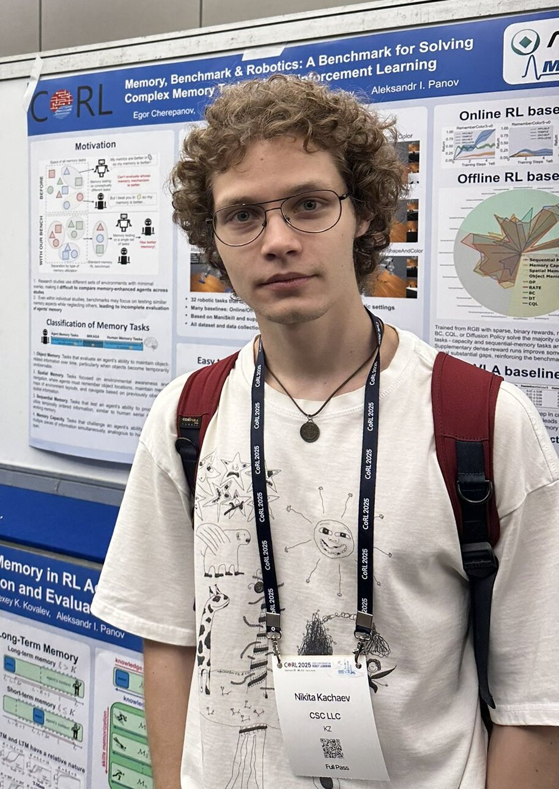
Highlights
06 May 2026 🎉 +2 papers accepted at ICLR 2026: MIKASA and Unraveling the Complexity of Memory in RL Agents!
18 November 2025 🎉 Don't Blind Your VLA accepted at AAMAS 2026 as an Oral presentation!
18 November 2025 🎉 Don't Blind Your VLA accepted at AAMAS 2026 as an Oral presentation!
18 November 2025 🎉 Don't Blind Your VLA accepted at AAMAS 2026 as an Oral presentation!
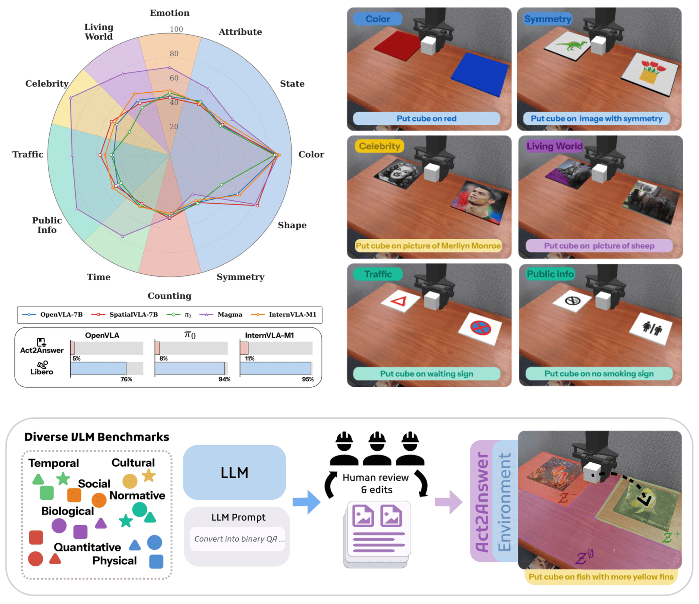
Does VLA Even Know the Basics? Measuring Commonsense and World Knowledge Retention in Vision-Language-Action Models
Nikita Kachaev, Andrey Moskalenko, Matvey Skripkin, Nikita Kurlaev, Daria Pugacheva, Albina Burlova, Mikhail Kolosov, Denis Shepelev, Andrey Kuznetsov, Elena Tutubalina, Aleksandr Panov, Alexey Kovalev, Vlad Shakhuro
under review
Project Page •
PDF
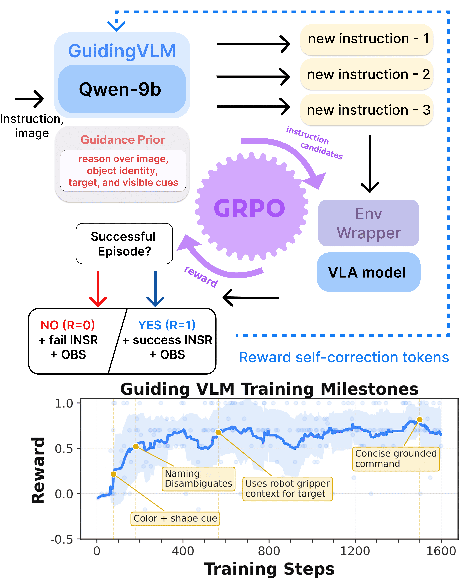
VLA Grounder: Language-Conditioning Space Optimization for Black-Box VLA Models
Damir Shodiev, Aleksei Staroverov, Nikita Kachaev, Alexey Kovalev, Aleksandr Panov
under review
Project Page •
PDF
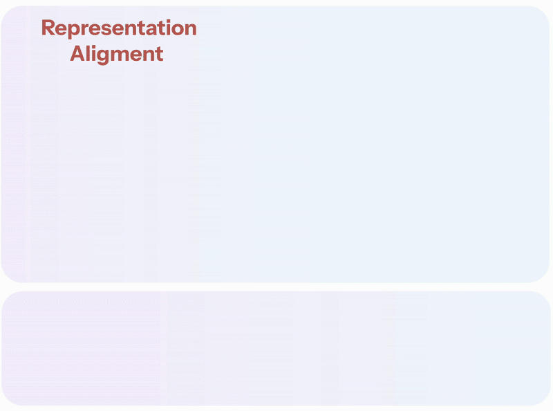
Don’t Blind Your VLA: Aligning Visual Representations for OOD Generalization
Nikita Kachaev, Mikhail Kolosov, Daniil Zelezetsky, Alexey K. Kovalev, Aleksandr I. Panov
AAMAS, Oral, 2026
★ Oral ★
Project Page •
PDF •
Code
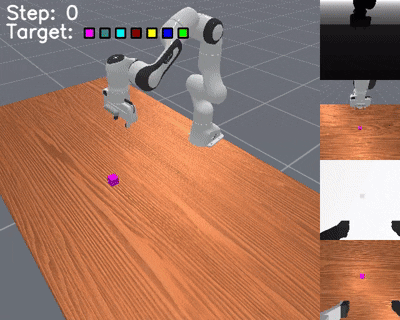
Memory, Benchmark & Robots: A Benchmark for Solving Complex Tasks with Reinforcement Learning
Egor Cherepanov, Nikita Kachaev, Alexey K. Kovalev, Aleksandr I. Panov
The Thirteenth International Conference on Learning Representations (ICLR 2026)
Project Page •
PDF •
Code
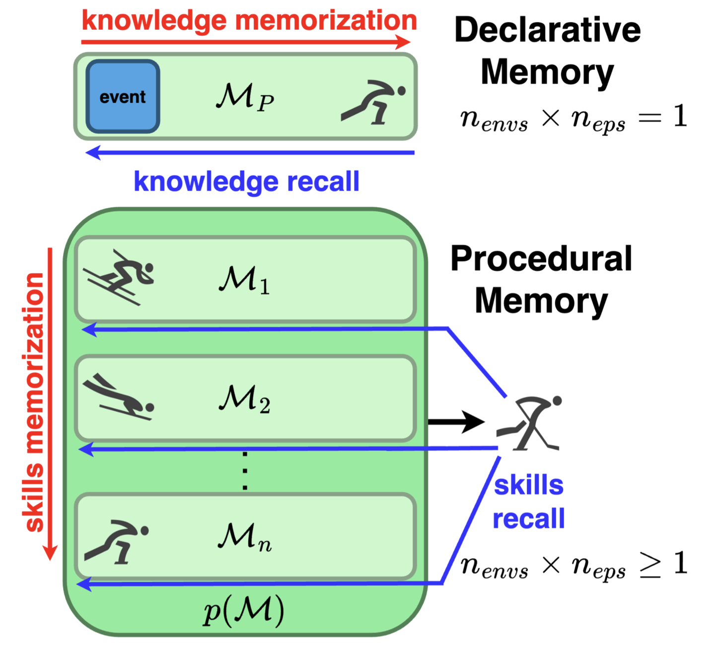
Unraveling the Complexity of Memory in RL Agents: an Approach for Classification and Evaluation
Egor Cherepanov, Nikita Kachaev, Artem Zholus, Alexey K. Kovalev, Aleksandr I. Panov
The Thirteenth International Conference on Learning Representations (ICLR 2026), Poster
PDF
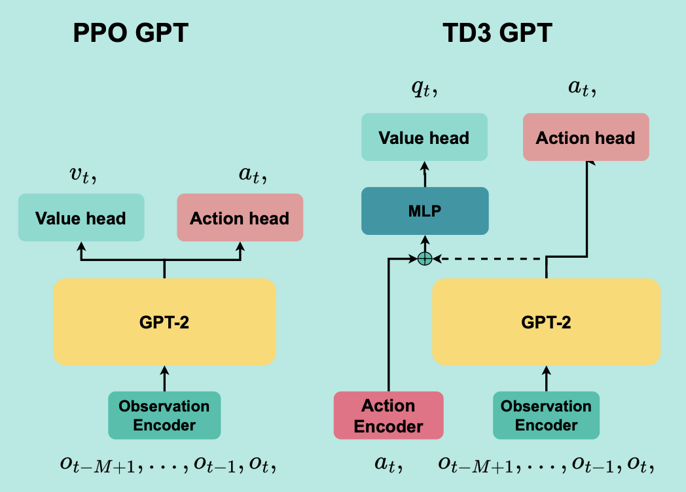
A New Perspective on Transformers in Online Reinforcement Learning for Continuous Control
Nikita Kachaev, Daniil Zelezetsky, Egor Cherepanov, Alexey K. Kovelev, Aleksandr I. Panov
The Thirteenth International Conference on Learning Representations (ICLR), 7th Robot Learning Workshop. Poster, 2025
PDF
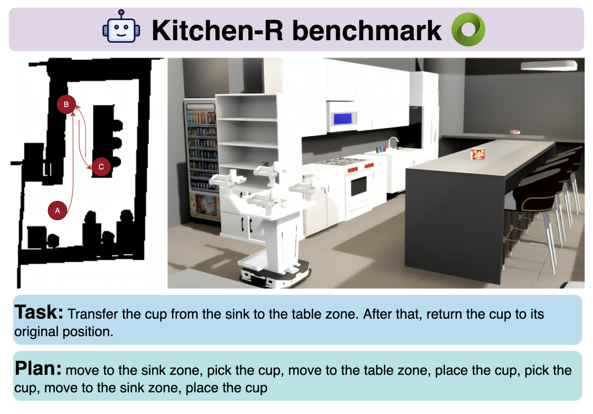
Mind and Motion Aligned: A Joint Evaluation IsaacSim Benchmark for Task Planning and Low-Level Policies in Mobile Manipulation
Nikita Kachaev, Andrei Spiridonov, Andrey Gorodetsky, Kirill Muravyev, Nikita Oskolkov, Aditya Narendra, Vlad Shakhuro, Dmitry Makarov, Aleksandr I. Panov, Polina Fedotova, Alexey K. Kovalev
Reports of the RAS: Mathematics, Informatics, and Control Processes, Journal, 2025
PDF
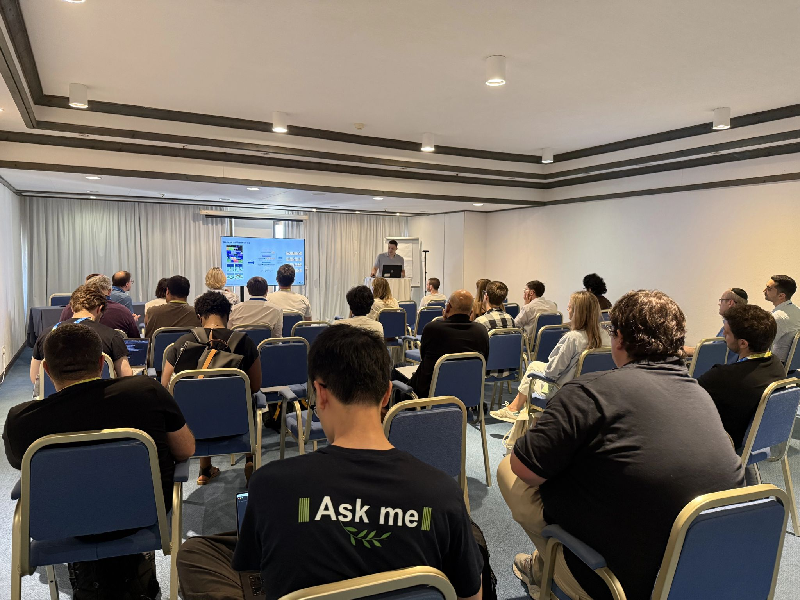
⭐ Oral talk at AAMAS 2026
27 May 2026
Our work Don’t Blind Your VLA was presented as an oral talk at AAMAS 2026 in Cyprus: Daniil presented in person, while I joined online.
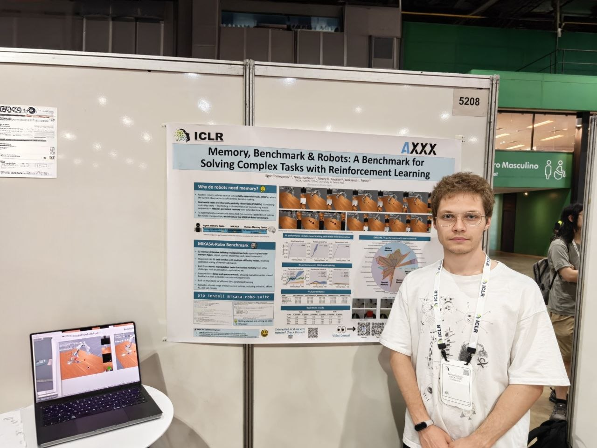
🇧🇷 Presented 2 papers at ICLR 2026 in Rio de Janeiro, Brazil
22-27 April 2026
In Rio de Janeiro, Brazil I presented two works at ICLR 2026: Memory in RL Agents (📍Thursday, April 23, Poster P3-1721) and MIKASA (📍Saturday, April 25, Poster P4-5208).
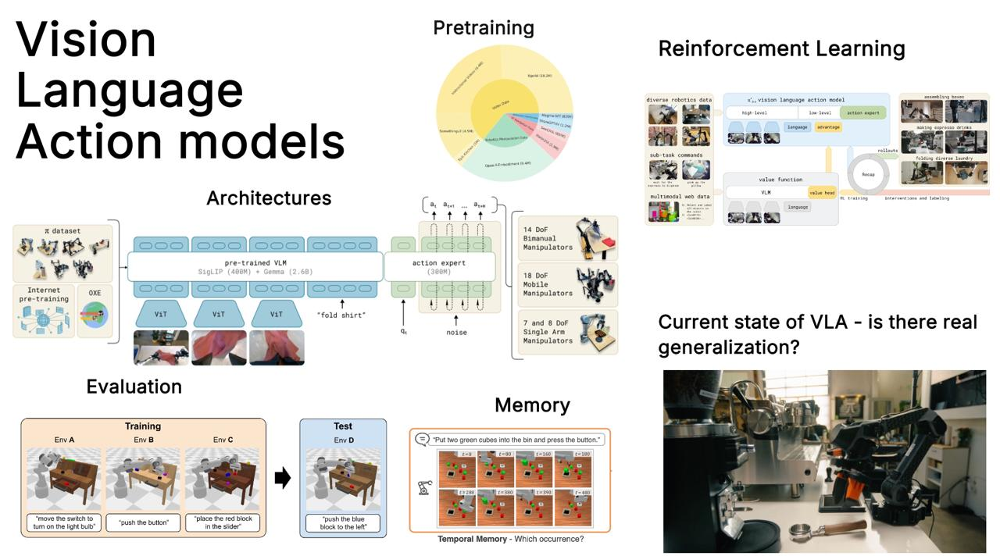
Invited lecture on VLA models for the YSDA AI in Robotics course
30 April 2026
I was invited to the YSDA AI in Robotics course to give a lecture and seminar on VLA models and modern robotic manipulation.
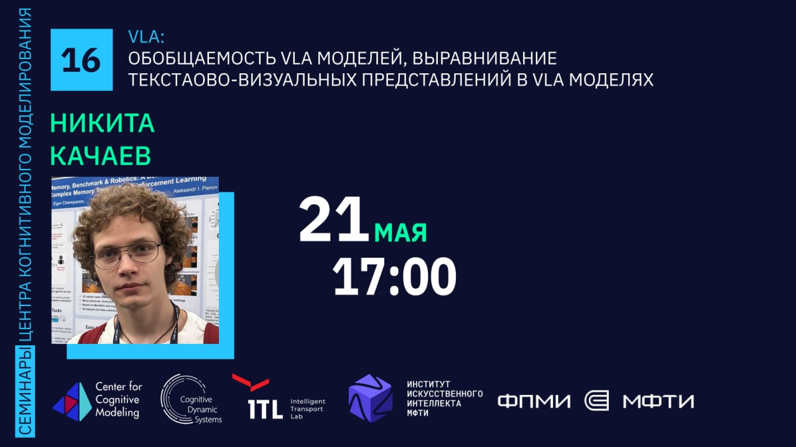
Seminar on VLA generalization and text-visual representation alignment
21 May 2026
I gave Seminar 16: Generalization of VLA models and text-visual representation alignment in VLA models, discussing why fine-tuned VLA models can forget, lose focus, and degrade language understanding on small robotics datasets, and how visual representation alignment helps mitigate these issues.
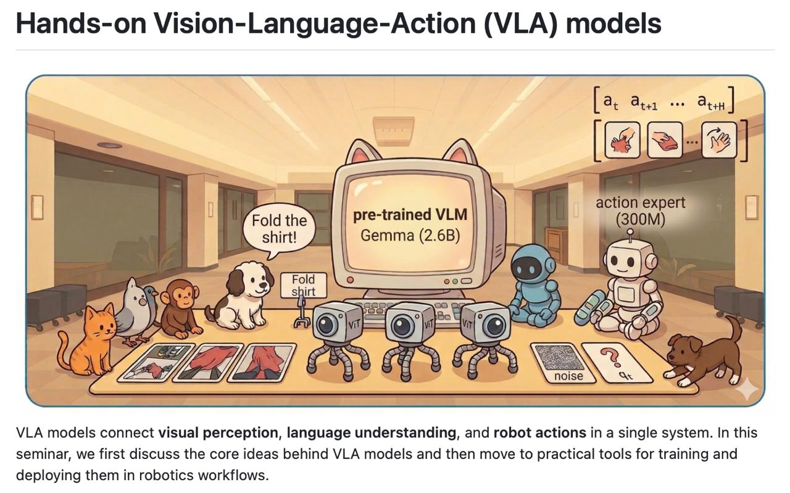
Organized workshop on VLA models at ROS Meetup 2026
21 March 2026
I organized and delivered a workshop on Visual-Language-Action models at ROS Meetup 2026, covering modern VLA training, evaluation, and practical robotics development workflows.
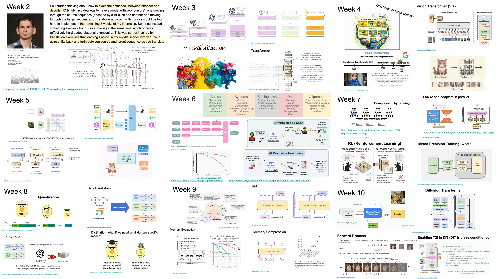
Lecturer for Transformer Models in Deep Learning at HSE University
12 January 2026
I taught the Transformer Models in Deep Learning module course on attention, transformers, LLMs, VLMs, efficient inference, and applications across NLP, computer vision, and other domains.
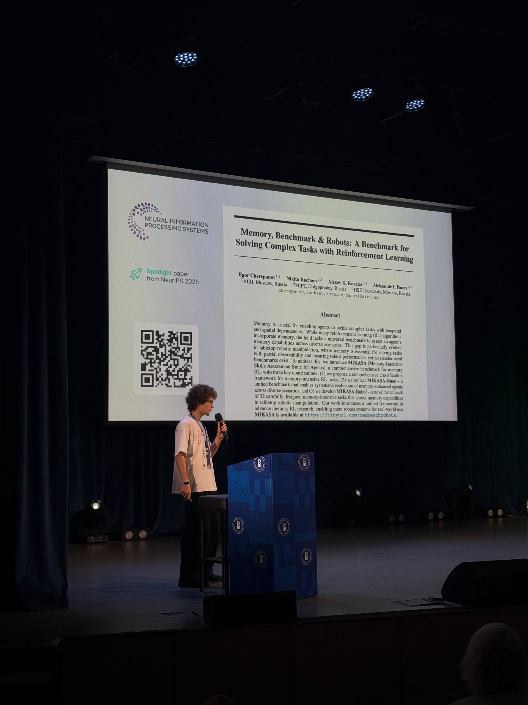
Spotlight talk on Memory in RL Agents at HSE ML and AI Conference
12 December 2025
I gave a spotlight talk on memory in reinforcement learning agents at the HSE University 4th Conference on Machine Learning and AI.
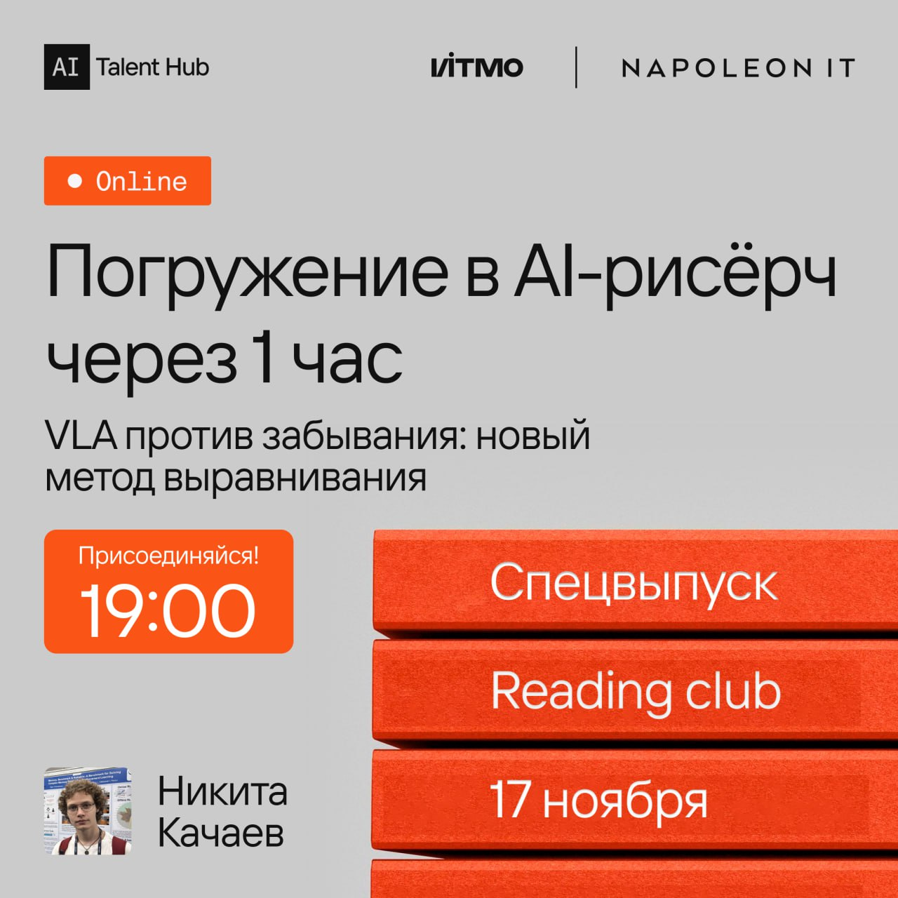
Invited talk on representation alignment for OOD generalization in VLA
14 November 2025
I gave an invited talk at the ITMO University Reading Club Special Session on representation alignment for out-of-distribution generalization in VLA models.
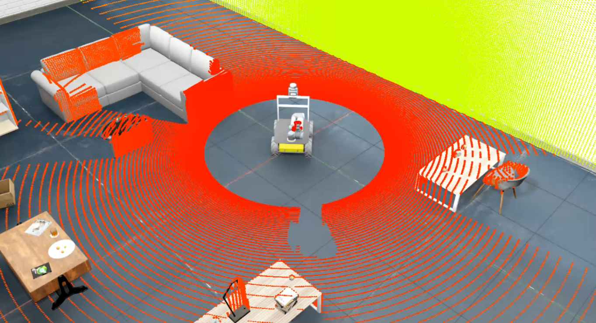
Organized workshop on NVIDIA Isaac Sim at ROS Meetup 2025
10 October 2025
I organized and delivered a deep-dive workshop on NVIDIA Isaac Sim at ROS Meetup 2025, covering real2sim workflows and robotics simulation tooling.
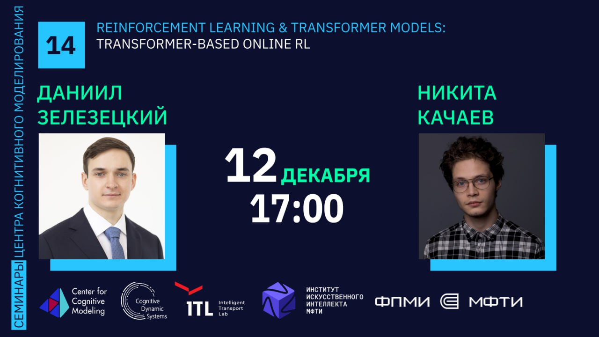
Seminar on transformer-based online reinforcement learning
12 December 2025
I presented transformer-based approaches for online reinforcement learning at AIRI and MIPT reading clubs and seminars.
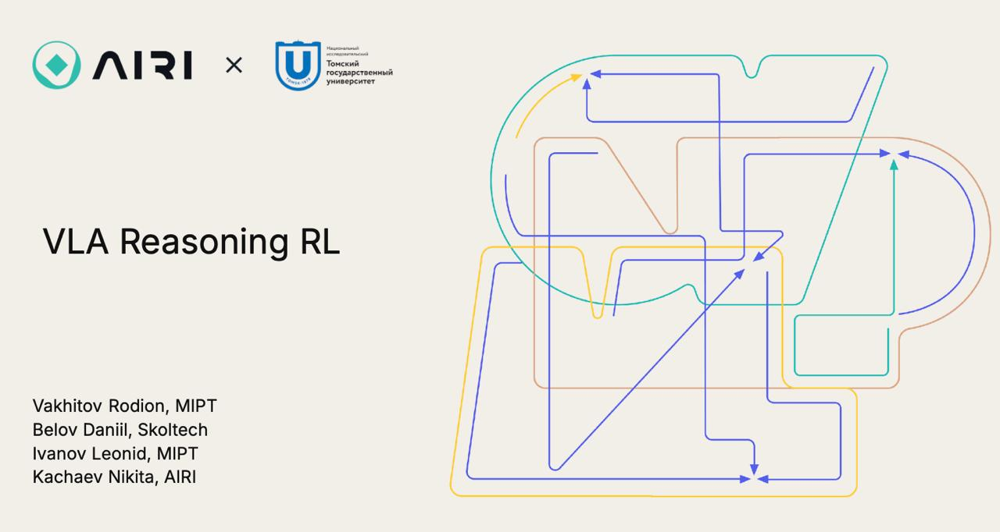
Mentored student projects on VLA models at AIRI 2025 Summer School
18 August 2025
I mentored student projects on Visual-Language-Action models, reinforcement learning, and reasoning for embodied AI at AIRI 2025 Summer School.
Some random stuff will be here in the future.